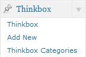
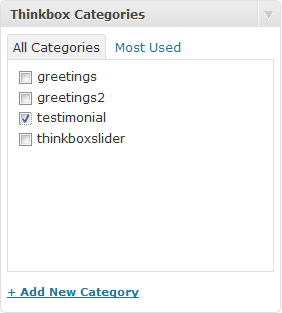
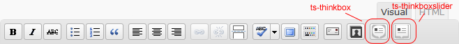
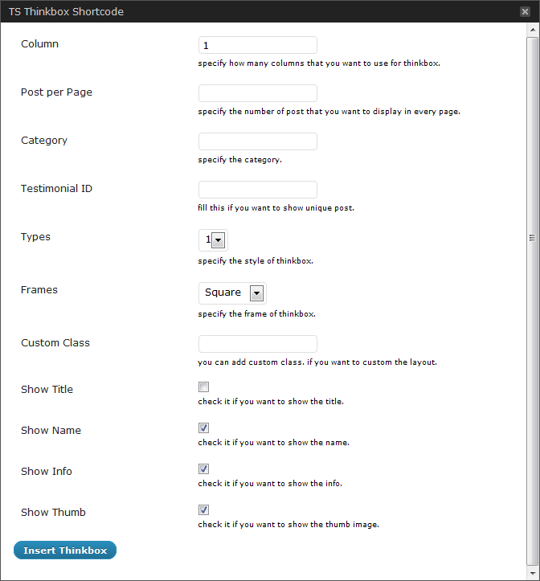
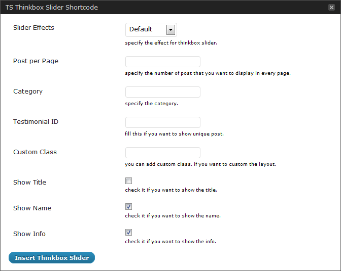

TS Thinkbox Wordpress Plugin
Plugin Documentation
First Things First
Please take the time to read through the instructions and take notice of the instructions listed here, as many support related questions can be answered simply by re-reading these instructions.
We will frequently update this theme for bug fix, add new features and more... please follow us on twitter to get notification.
If you still have a problems, please send a message to me via my profile page http://themeforest.net/user/templatesquare, please include the questions/problems, your site url and theme name.
— TemplateSquare
Table of Content
- Plugin Installation
- Thinkbox Content
- Thinkbox Shortcode
- Shortcode Examples
1. Plugin Installation
- Unzip the zip file that you downloaded from themeforest and locate the 'ts-thinkbox' folders inside the 'plugins' folder. This is the folder and contents you will need to upload to your webserver.
- FTP Upload the 'ts-thinkbox' folders to your 'wp-content/plugins/' directory on your web server, then you can activate the plugin.
- After you activate the plugin, you will see 'Thinkbox' tab in left menu.

back to top
2. Thinkbox Content
Tutorial to add Thinkbox content
Add Display Category
- Click the 'Thinkbox' tab.
- Click the 'Thinkbox Categories' Sub Tab.
- Enter the category name of 'Thinkbox' in the name box.
- Click the 'Add New Category' button and you are done!
- You will see the category you just added in the right side area.
Adding display posts
- Click the 'Thinkbox' tab.
- Click the 'Add New' Sub Tab
- Start filling in the blanks.
- Select the 'Thinkbox' category in the right 'Thinkbox Category' section.

- 'Upload' and 'set featured image' for thumb image. This featured image will be used for image thumbnail.
- Custom fields (optional)
- tb-thumb: the value is the url of the thumbnail image.
If you add tb-thumb custom field then it will not use the 'featured image' as the thumbnail.
- tb-name: input the value with a name.
- tb-info: input the value with any useful info such as company's name or position
- When you are ready, click Publish.
- You can add as many display posts as needed.
back to top
3. Thinkbox Shortcode
To use it, add a shortcode to a page like this:
[ts-thinkbox col="2" frame="square" type="1" showtitle="no" showname="yes" showthumb="yes"]
Otherwise, you can :
- Click ts-thinkbox icon and ts-thinkboxslider icon shown below :

Screenshot 1: TS Thinkbox icon and TS Thinkbox Slider
- And you will see form TS Thinkbox like this :

Screenshot 2: TS Thinkbox form
- You can set the thinkbox from here. And click "Insert Thinkbox" to generate the shortcode.
- if you click ts-thinkboxslider icon you will see form TS Thinkbox Slider like this :

Screenshot 3: TS Thinkbox Slider form
- You can set the thinkbox slider from here. And click "Insert Thinkbox Slider" to generate the shortcode.
- When you are ready, click Publish.
Ts Thinkbox Options default value :
'col' => '3',
'postperpage' => '',
'cat' => '',
'testiid' => '',
'type' => '1',
'frame' => 'square',
'customclass' => ''
'showtitle' => 'no',
'showname' => 'yes'
'showinfo' => 'yes'
'showthumb' => 'yes'
- col - [number]
Specify the number of columns. We provide 4 type of columns. if you input less than 1, it will change into 1. and if you input more than 4, it will change into 4.
- postperpage - [number]
Specify the number of post that you want to display in every page. if you input -1 it will show all posts.
- cat - [string]
Specify the display categories that you want to show.
- testiid - [string]
Specify the specific Thinkbox post by input the ID. you can input multiple ID by using comma separated. for example : '810,812,814'
- type - [number]
Specify the Thinkbox type. you can choose between : '1' or '2'
- frame - [string]
Specify the display frame that you want to show. you can choose between : 'square' or 'rounded'
- customclass - [string]
You can add custom class. If you want to custom the layout.
- showtitle - [boolean]
Toggle to show the title.
- showname - [boolean]
Toggle to show the name.
- showinfo - [boolean]
Toggle to show the information.
- showthumb - [number]
Toggle to show the image thumb.
Ts Thinkbox Options default value :
'sliderfx' => 'scrollHorz',
'postperpage' => '',
'cat' => '',
'testiid' => '',
'customclass' => ''
'showtitle' => 'no',
'showname' => 'yes'
'showinfo' => 'yes'
- sliderfx - [string]
Specify the Thinkbox Slider Effects. We provide 4 type of effects: "scrollHorz","fade","scrollUp","scrollDown".
- postperpage - [number]
Specify the number of post that you want to display in every page. if you input -1 it will show all posts.
- cat - [string]
Specify the display categories that you want to show.
- testiid - [string]
Specify the specific Thinkbox post by input the ID. you can input multiple ID by using comma separated. for example : '810,812,814'
- customclass - [string]
You can add custom class. If you want to custom the layout.
- showtitle - [boolean]
Toggle to show the title.
- showname - [boolean]
Toggle to show the name.
- showinfo - [boolean]
Toggle to show the information.
back to top
4. Shortcode Example
Here is some example how to use the shortcode.
- [ts-thinkbox cat="greetings" type="2" col="2" frame="rounded" postperpage="5"]
Here is the link for the example above : http://demowp.templatesquare.com/plugins/ts-thinkbox/thinkbox-demo-1/
- [ts-thinkbox cat="testimonial" postperpage="5"]
Here is the link for the example above : http://demowp.templatesquare.com/plugins/ts-thinkbox/thinkbox-demo-2/
- [ts-thinkbox type="2" cat="greetings2" col="3"]
Here is the link for the example above : http://demowp.templatesquare.com/plugins/ts-thinkbox/thinkbox-demo-3/
- [ts-thinkbox col="2" cat="testimonial" frame="rounded"]
Here is the link for the example above : http://demowp.templatesquare.com/plugins/ts-thinkbox/thinkbox-demo-4/
- [ts-thinkboxslider cat="thinkboxslider" sliderfx="fade"]
Here is the link for the example above : http://demowp.templatesquare.com/plugins/ts-thinkbox/thinkbox-slider-demo-1/
- [ts-thinkboxslider showname="no" cat="thinkboxslider" showinfo="no"]
Here is the link for the example above : http://demowp.templatesquare.com/plugins/ts-thinkbox/thinkbox-slider-demo-2/
- [ts-thinkboxslider cat="thinkboxslider" sliderfx="scrollUp" postperpage="3"]
Here is the link for the example above : http://demowp.templatesquare.com/plugins/ts-thinkbox/thinkbox-slider-demo-3/
- [ts-thinkboxslider cat="thinkboxslider" sliderfx="scrollDown" showtitle="yes" showinfo="no"]
Here is the link for the example above : http://demowp.templatesquare.com/plugins/ts-thinkbox/thinkbox-slider-demo-4/
back to top